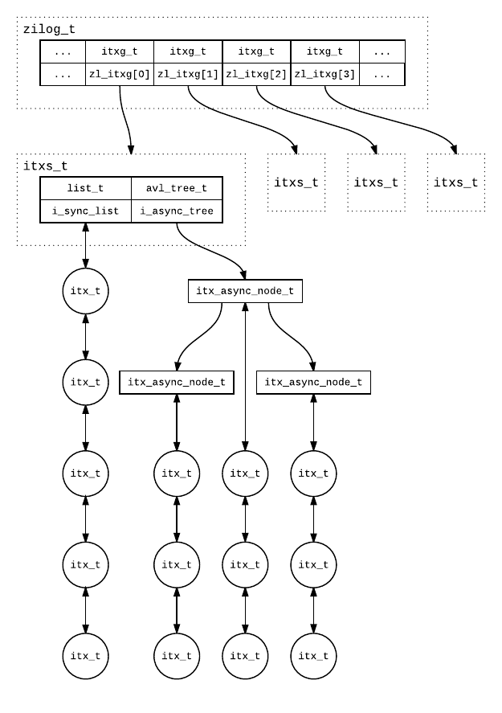

OpenZFS: Notes on ZIL Transactions
Introduction
The OpenZFS Intent Log (ZIL) is used to ensure POSIX compliance of certain system calls (that modify the state of a ZFS dataset), and protect against data loss in the face of failure scenarios such as: an operating system crash, power loss, etc. Specifically, it’s used as a performance optimization so that applications can be assured that their given system call, and any “user data” associated with it, will not be “lost”, without having to wait for an entire transaction group (TXG) to be synced out (which can take on the order of seconds, on a moderately loaded system).
So how does this process work? How are these system calls tracked? This post will attempt to explain how the system calls enter the ZIL, and how they’re tracked by the in-memory portion of the ZIL. What isn’t covered in this post is how the in-memory representation of the system calls get written to disk, nor how the on-disk ZIL is used to “replay” the system calls after a failure event.
ZFS Intent Log Transactions
Much like how ZFS’s DMU layer operates on the notion of “transactions”,
so does the ZIL. For each system call that modifies a dataset’s state, a
ZIL transaction is created; referred to as an itx in the code and this
document. It’s important to note, these itx’s are created for
“synchronous” system calls, as well as “asynchronous” ones. For example,
an itx will be generated by an application calling write on a ZFS
dataset, whether the O_SYNC flag is used or not. Additionally, all
system calls that modify a dataset will cause an itx to be generated;
e.g. write, rename, setattr, etc. all will generate an itx
unique to that system call.
In-Memory Representation of ZIL Transactions
Each itx is composed of an itx_t, as well as a system call specific
component. The itx_t portion looks like this:
typedef struct itx {
list_node_t itx_node; /* linkage on zl_itx_list */
void *itx_private; /* type-specific opaque data */
itx_wr_state_t itx_wr_state; /* write state */
uint8_t itx_sync; /* synchronous transaction */
uint64_t itx_sod; /* record size on disk */
uint64_t itx_oid; /* object id */
lr_t itx_lr; /* common part of log record */
/* followed by type-specific part of lr_xx_t and its immediate data */
} itx_t;
And for a write system call, the lr_write_t structure would be
tacked onto the end of the itx_t; this structure looks like this:
typedef struct {
lr_t lr_common; /* common portion of log record */
uint64_t lr_foid; /* file object to write */
uint64_t lr_offset; /* offset to write to */
uint64_t lr_length; /* user data length to write */
uint64_t lr_blkoff; /* no longer used */
blkptr_t lr_blkptr; /* spa block pointer for replay */
/* write data will follow for small writes */
} lr_write_t;
Thus, the in-memory representation for a write itx actually looks
like the following (assuming a small amount of data is being written):
struct {
itx_t common;
lr_write_t uncommon;
void *data;
};
The portion of the structure that’s common to all itx types starts at
offset 0, the write specific portion immediately follows the itx_t,
and then finally the user-data that is being written.
Determing the Type of a ZIL Transaction
Since the last structure depicted in the previous section doesn’t
actually exist, it’s important to understand how the code is able to
determine which structure follows the itx_t portion of an itx; since
it could be any one of the many options (e.g. lr_write_t,
lr_rename_t, lr_setattr_t, etc).
The lr_t contained within the itx_t is used for this purpose. It
contains an lrc_txtype field, which can be used to determine the
itx’s type. For example, if the itx was for a write, lrc_tx_type
would equal TX_WRITE, and the lr_write_t could be obtained like so:
ASSERT(itx->itx_lr.lrc_txtype == TX_WRITE);
lr_write_t *lr = (lr_write_t *)&itx->itx_lr;
ZIL Transactions by Example
Now that we have a brief understanding of what an itx is, lets look at
how these are generated and added to the ZIL; we’ll be using
zfs_write as the example code path.
Accessing the In-Memory ZIL Structure
The first line of code within zfs_write that pertains to the ZIL’s
machinery is this:
zilog = zfsvfs->z_log;
In order to manipulate the ZIL, a pointer to the ZIL structure (i.e. the
zilog_t) is needed. This is obtained using the vnode_t (passed in as
a parameter to zfs_write) to extract a pointer to the corresponding
znode_t; the v_data field of the vnode_t holds a pointer to the
znode_t. Once we have the znode_t for this specific file, it’s
trivial to use its z_zfsvfs field to access the zfsvfs_t, and then
the z_log field to access the zilog_t. It’s worth noting that the
zilog_t is shared across all files in the same dataset (i.e. there’s a
single ZIL per ZFS dataset).
ZIL Transaction Creation and Assignment
Once the zilog_t structure is obtained, the next line within
zfs_write pertaining to the ZIL is this one:
zfs_log_write(zilog, tx, TX_WRITE, zp, woff, tx_bytes, ioflag);
The zfs_log_write function is used to create new itxs, as well as
insert them into one of the ZIL’s list of transactions.
zil_itx_create
Inside of zil_log_write, the function zil_itx_create is used to
allocate one or more itx_t structures to represent the write system
within the in-memory portion of the ZIL. That can be seen here:
while (resid) {
itx_t *itx;
lr_write_t *lr;
ssize_t len;
/*
* If the write would overflow the largest block then split it.
*/
if (write_state != WR_INDIRECT && resid > ZIL_MAX_LOG_DATA)
len = SPA_OLD_MAXBLOCKSIZE >> 1;
else
len = resid;
// ... <snip> ...
itx = zil_itx_create(txtype, sizeof (*lr) +
(write_state == WR_COPIED ? len : 0));
// ... <snip> ...
resid -= len;
}
Where zil_itx_create simply allocates and initializes the in-memory
itx_t structure:
itx_t *
zil_itx_create(uint64_t txtype, size_t lrsize)
{
itx_t *itx;
lrsize = P2ROUNDUP_TYPED(lrsize, sizeof (uint64_t), size_t);
itx = kmem_alloc(offsetof(itx_t, itx_lr) + lrsize, KM_SLEEP);
itx->itx_lr.lrc_txtype = txtype;
itx->itx_lr.lrc_reclen = lrsize;
itx->itx_sod = lrsize; /* if write & WR_NEED_COPY will be increased */
itx->itx_lr.lrc_seq = 0; /* defensive */
itx->itx_sync = B_TRUE; /* default is synchronous */
return (itx);
}
Thus, for a single write (and single call to zfs_log_write), 1 or
more itxs will be created to represent the system call.
zil_itx_assign
At this point, the itxs representing the write will have been
allocated and initialized, but they’re not yet part of the ZIL. In order
to add the itxs to the ZIL, the zil_itx_assign function is used.
Expanding the previous code snippet from zfs_write, we can see that
zil_itx_assign is called immediately after the individual itxs are
created and initialized:
while (resid) {
itx_t *itx;
lr_write_t *lr;
ssize_t len;
/*
* If the write would overflow the largest block then split it.
*/
if (write_state != WR_INDIRECT && resid > ZIL_MAX_LOG_DATA)
len = SPA_OLD_MAXBLOCKSIZE >> 1;
else
len = resid;
itx = zil_itx_create(txtype, sizeof (*lr) +
(write_state == WR_COPIED ? len : 0));
lr = (lr_write_t *)&itx->itx_lr;
if (write_state == WR_COPIED && dmu_read(zp->z_zfsvfs->z_os,
zp->z_id, off, len, lr + 1, DMU_READ_NO_PREFETCH) != 0) {
zil_itx_destroy(itx);
itx = zil_itx_create(txtype, sizeof (*lr));
lr = (lr_write_t *)&itx->itx_lr;
write_state = WR_NEED_COPY;
}
itx->itx_wr_state = write_state;
if (write_state == WR_NEED_COPY)
itx->itx_sod += len;
lr->lr_foid = zp->z_id;
lr->lr_offset = off;
lr->lr_length = len;
lr->lr_blkoff = 0;
BP_ZERO(&lr->lr_blkptr);
itx->itx_private = zp->z_zfsvfs;
if (!(ioflag & (FSYNC | FDSYNC)) && (zp->z_sync_cnt == 0) &&
(fsync_cnt == 0))
itx->itx_sync = B_FALSE;
zil_itx_assign(zilog, itx, tx);
off += len;
resid -= len;
}
The purpose of zil_itx_assign is to insert the new itx into one of
the ZIL’s list of transactions; the details of that process is covered
next (it’s complicated enough to warrant a new section).
zl_itxg[4], i_sync_list, i_async_tree, and ia_list
In order to fully understand how a given itx gets inserted into the
in memory representation of the ZIL (via zil_itx_assign), one has to
understand a few things about the zilog_t:
The
zl_itxgfield of thezilog_tcontains 4 uniqueitxg_ts, and eachitxg_tmaps to a particular DMU transaction group. Eachitxcreated is applicable to a specific DMU transaction (tx), which is then applicable to a specific DMU transaction group (txg). Thus, thetxis used to determine thetxgfor this specificitx, and thetxgis used to determine which of the 4 differentitxg_ts (from thezl_itxgarray) will be used when inserting theitx.Each of the 4
itxg_t’s maintain a:i_sync_listwhich is a simple linked list ofitx_tstructures.i_async_treewhich is an AVL tree ofitx_async_node_tstructures (indexed by DMU object ID), where each node in the tree (eachitx_async_node_t) maintains its ownia_list, which is a linked list ofitx_tstructures.
Below is a diagram that attempts to illustrate this (it’s not as complicated as the above explanation might sound):

Insertion of a ZIL Transaction
So, when zil_itx_assign is called in the context of zfs_log_write,
the itx will be inserted into one of itxg_t’s lists described in the
previous section. The following logic/criteria is used to decide which
list to use, when inserting the new itx:
- First, which of the 4
itxg_ts needs to be chosen. Thetxgthat the givenitxis associated with is used to make this decision.dmu_tx_get_txgis used to obtain thetxgfrom theitx’stx, and then thetxgis bit-wise AND-ed withTXG_MASKto determine whichitxg_tto use. - Now that the
itxg_tis chosen, the linked list that will be used when inserting theitxneeds to be decided. This depends on the value of theitx’sitx_syncfield (i.e. based on if the write is synchronous or not):- If
itx_syncisTRUE, theitxis appended to thei_sync_listof theitxg_tchosen in (1). - If
itx_syncisFALSE,avl_findis used to find theitx_asnyc_node_tfor the specific file being written, from thei_async_treeof theitxg_tchosen in (1). Once theitx_async_node_tis found, theitxis appended to that structure’sia_list.
- If
Once the itx has been assigned to either the i_sync_list or one of
the ia_list lists (contained in the itx_async_node_t), the work of
zfs_log_write is finished. This specific write system call has been
recorded and inserted into the in-memory representation of the ZIL, but
this record will still be lost if a power loss were to happen at this
point.
In order for the record of the write to persist in the event of a
power loss (or an equivalent operating system crash), the itxs need
to be written to the on-disk representation of the ZIL. Notes on that
process will be left for another post.